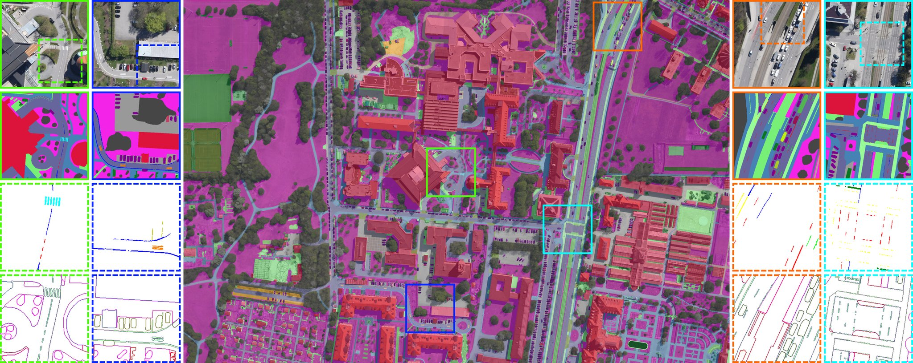
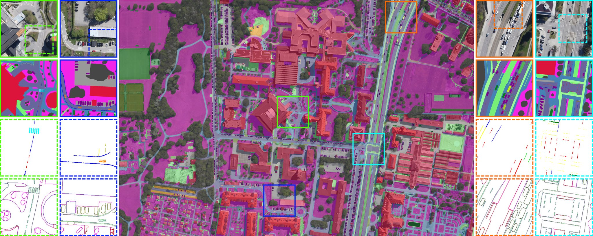

Skyscapes -- Fine-Grained Semantic Understanding of Aerial Scenes
Seyed Majid Azimi, Corentin Henry, Lars Sommer, Arne Schumann, Eleonora Vig.
Seyed Majid Azimi, Corentin Henry, Lars Sommer, Arne Schumann, Eleonora Vig.
Understanding the complex urban infrastructure with centimeter-level accuracy is essential for many applications from autonomous driving to mapping, infrastructure monitoring, and urban management. Aerial images provide valuable information over a large area instantaneously; nevertheless, no current dataset captures the complexity of aerial scenes at the level of granularity required by real-world applications. To address this, we introduce SkyScapes, an aerial image dataset with highly-accurate, fine-grained annotations for pixel-level semantic labeling. SkyScapes provides annotations for 31 semantic categories ranging from large structures, such as buildings, roads and vegetation, to fine details, such as 12 (sub-)categories of lane markings. We have defined two main tasks on this dataset: dense semantic segmentation and multi-class lane-marking prediction. For the SkyScapes-v1.0, as described in the paper, it contains 2806 aerial images from different sensors and platforms. Each image with the size of 5616 × 3744 pixels and contains objects exhibiting a wide variety of scales, orientations, and shapes. These SkyScapes images are then annotated by experts in aerial image interpretation. These 31 semantic classes introduce different challenges. Therefore, we have defined the following benchmarks: 1) SkyScapes-Dense with 20 classes as the lane-markings were merged into a single class, 2) SkyScapes-Lane with 13 classes comprising 12 lane-marking classes and a non-lane-marking one, 3) SkyScapes-Dense-Category with 11 merged classes comprising nature (low-vegetation, tree), driving-area (paved, non-paved), parking-area (paved, non-paved), human-area (bikeway, sidewalk, danger area), shared human and vehicle area (entrance/exit), road-feature (lane-marking), residential area (building), dynamic-vehicle (car, van, truck, large-truck, bus), static-vehicle (trailer), man-made surface (impervious surface), and others objects (clutter), 4) SkyScapes-Dense-Edge-Binar, for binary edge segmentation and 5) SkyScapesDense-Edge-Multi for multi-class edge segmentation. The fully annotated SkyScapes images contains 70,346 instances, each of which is labeled by a polygon.
We split the dataset into training, validation, and test sets with 50%, 12.5%, and 37.5% portions respectively. We chose this particular split due to the class imbalance and to avoid splitting larger images. The training and validation sets will be publicly available. Test images will be released as an online benchmark with undisclosed ground-truth.
The images were acquired by the German Aerospace Center (DLR) with airborne acquisition flights over several cities in Germany and several European countries. The data collection was carried out with a helicopter or aircraft, Germany using a low-cost camera array system consisting of three DSLR cameras mounted on a flexible platform for recording the data. Only the nadir-looking images were selected. In total, 16 non-overlapping RGB images of size 5616x3744 pixels were chosen. The flight altitude of about 1000m above ground led to a GSD of approximately 13cm/pixel. The images represent urban and partly rural areas with highways, first/second order roads, and complex traffic situations, such as crossings and congestion.
For more details, refer to the arXiv preprint of DOTA.
 

If you make use of the DOTA dataset, please cite our following paper:
@InProceedings{Xia_2018_CVPR,
author = {Xia, Gui-Song and Bai, Xiang and Ding, Jian and Zhu, Zhen and Belongie, Serge and Luo, Jiebo and Datcu, Mihai and Pelillo, Marcello and Zhang, Liangpei},
title = {DOTA: A Large-Scale Dataset for Object Detection in Aerial Images},
booktitle = {The IEEE Conference on Computer Vision and Pattern Recognition (CVPR)},
month = {June},
year = {2018}
}
@InProceedings{Ding_2019_CVPR,
author = {Jian Ding, Nan Xue, Yang Long, Gui-Song Xia, Qikai Lu},
title = {Learning RoI Transformer for Detecting Oriented Objects in Aerial Images},
booktitle = {The IEEE Conference on Computer Vision and Pattern Recognition (CVPR)},
month = {June},
year = {2019}
}
For any problem you have in using DOTA or ODAI, you can join the WeChat group and communicate.
Because the number of WeChat groups exceeds 100, invitations are needed, so the discussion group is moved to the QQ group.
You can also ask questions and comment on the comment area of the evaluation server page now.
If you have any the problem or feedback in using DOTA, please contact